垂直2区分折れ線グラフ
Vertical-2-Panel
概要
このチュートリアルは2つのグラフをカスタム化して統合する方法を紹介します。
- 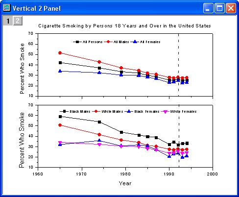
必要なOriginのバージョン: Origin 2015 SR0以降
学習する項目
このチュートリアルで以下のことを行います：
- グラフウィンドウを統合する
- 統合後のグラフを編集する
- グラフテーマを適用する
ステップ
- 新しいワークブックを用意します。ヘルプ: フォルダを開く: サンプルフォルダを選択して、サンプルフォルダを開きます。このフォルダ内のGraphingサブフォルダにあるVertical_2_Panel_Line.txt ファイルを探します。空のワークシートにファイルをドラッグアンドドロップしてインポートします。
- 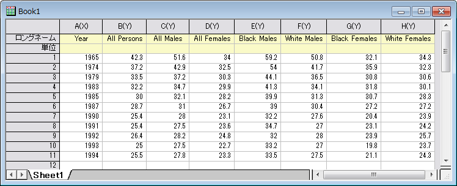
- 列2から列4を選択し、作図：Basic 2D：線＋シンボルボタンをクリック、または２Dグラフィックツールバーの線+シンボルボタンをクリックします。
- 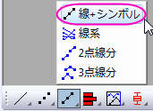
- 以下のようなグラフが作図されます。
- 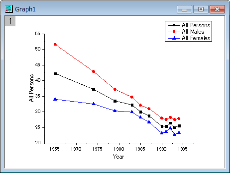
- ワークシートに戻ります。列5から列8を選択し、先ほどと同じように2Dグラフギャラリーツールバーの線＋シンボルボタン をクリックして以下のようなグラフを作成します。
- 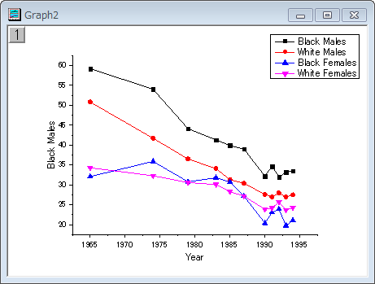
- 2つのグラフを統合するには、メニューからグラフ操作：グラフウィンドウの統合を選択します。初期設定のまま、OKボタンをクリックします。2つのグラフは1つのグラフウィンドウ内に統合します。
- 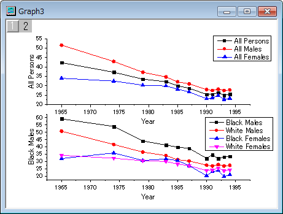
- グラフウィンドウの左上でレイヤ1が選択されていることを確認し、レイヤ1のY軸をダブルクリックして軸ダイアログを開きます。スケールタブを開き、下図のようにダイアログを設定します。
- 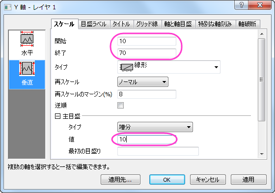
- 左側パネルで水平アイコンをクリックします。目盛ラベルタブを開き、表示チェックを外してレイヤ1の目盛ラベルを非表示にしてOKをクリックして設定を適用します。
- 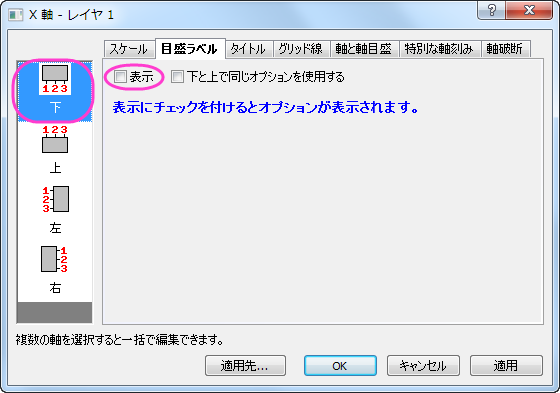
- Layer1のX軸タイトルを削除します。レイヤ2のY軸に対しても同じスケールをセットします。下図のようなグラフになります。
- 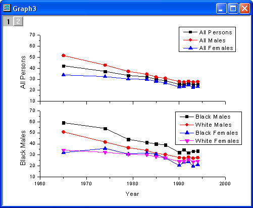
- グラフにテーマを適用し、上X軸と右Y軸を追加します。メニューから環境設定：テーマオーガナイザを選択し、テーマオーガナイザダイアログを開きます。グラフタブを選択し、表からOpposite Lines を選択します。そして、今すぐ適用ボタンをクリックしましょう。閉じるボタンをクリックしてダイアログを閉じます。
- 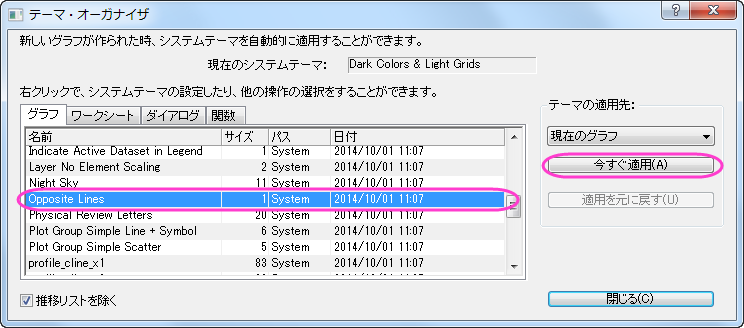
- レイヤ1の凡例を選択し、それを右クリックして、ショートカットメニューからオブジェクトの表示属性を選びます。ダイアログのオプションは以下のように設定します。
- 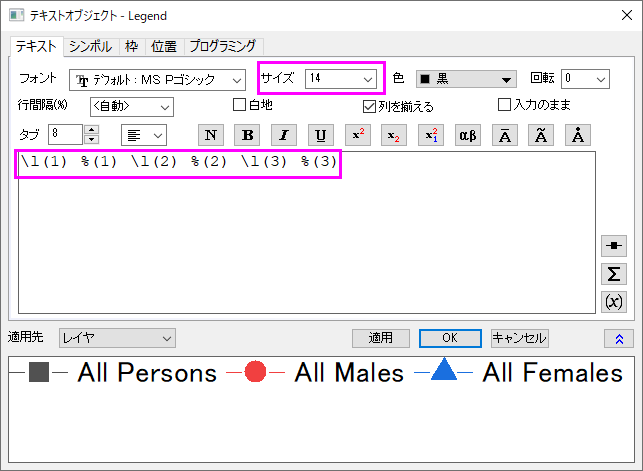
- 凡例を適切な位置に移動します。
- プロット操作・オブジェクト作成ツールバーの直線ツールをクリックし、以下のサンプルの図のようにレイヤ1に線を引きます。SHIFT キーを押しながら、線が垂直になるように引きます。線をダブルクリックして、線オブジェクトのプロパティダイアログを開きます。線タブで種類では破線を、幅では2を入力して編集します。サイズタブをクリックします。水平移動と垂直移動の両方のチェックボックスを選択します。OKボタンをクリックして設定を終了します。
- レイヤ2に対して、ステップ 8-9 を繰り返します。
- プロット操作・オブジェクト作成ツールバーのテキストボタンを選択します。グラフの中央をクリックし、Cigarette Smoking by Persons 18 Years and Over in the United States と入力して、グラフのタイトルを追加します。レイヤ1およびレイヤ2のY軸タイトルをダブルクリックして、そこにPercent Who Smoke と入力します。
- 最終的に、下図のようなグラフになります。